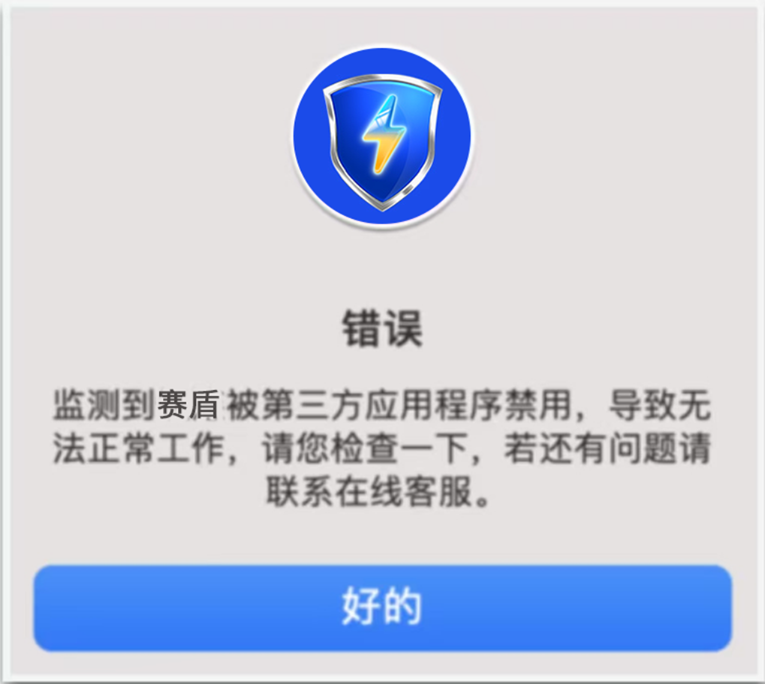
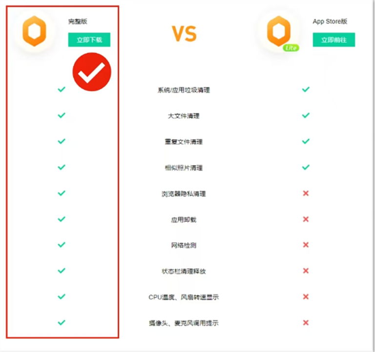

返回
欢迎查看常见问题
智慧服务，让您使用更简单

赛盾 VPN 被第三方应用程序禁用
在 Mac 环境下使用赛盾 VPN 的过程中被第三方应用程序禁用，您可以通过这篇文章解决问题
赛盾 VPN 成功安装后点击链接提示:错误或赛盾被第三方应用程序禁用(如图下)是因为受到清理软件的限制，若您遇到以下情况，您可以通过以下对应的方法解决问题。

检查设备中是否安装 Tencent Lemon 这类的清理软件
如果您安装了 Tencent Lemon(腾讯柠檬)，您在里面找到赛盾设置为开机启动。若已经卸载了，麻烦重新安装回来，再设置开机启动即可:如果您安装了 Tencent Lemon(腾讯柠檬)，您在里面找到赛盾设置为开机启动。若已经卸载了，麻烦重新安装回来，再设置开机启动即可:
设置步骤:
1.打开腾讯柠檬(Tencent Lemon)或是其他类似杀毒软件
2.找到开机启动项管理
3.找到 world.Seton....helper
4.设置成允许即可
腾讯柠檬有分两个版本，需要下载完整版才可以完成以下设置

注:若您在下载和使用过程中有任何问题，您随时可以发送邮件给 {{kfEmail}}，将由专业的客户服务人员帮助您获取到最新版本的软件。